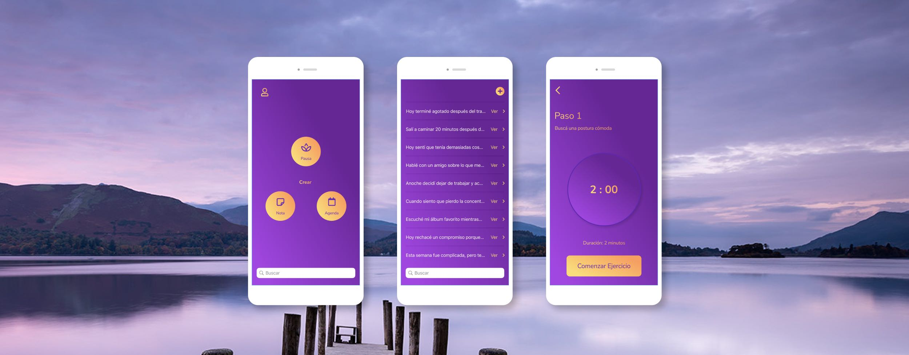
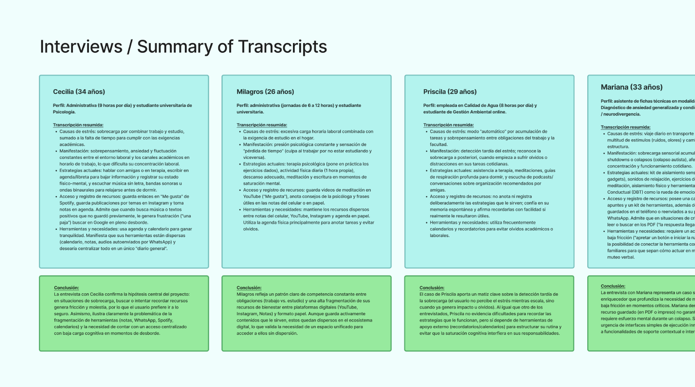
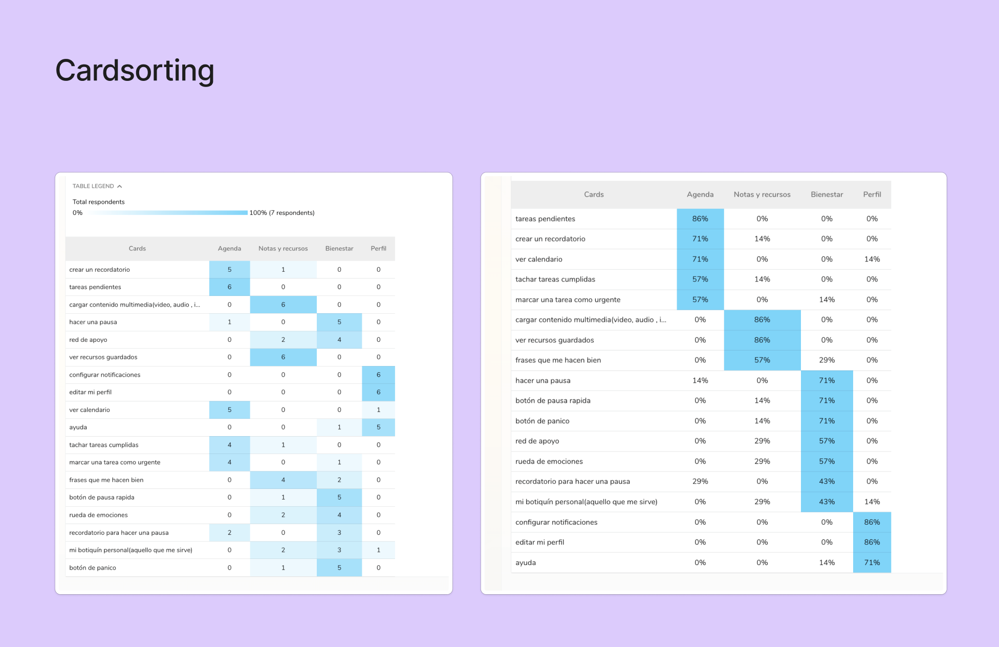
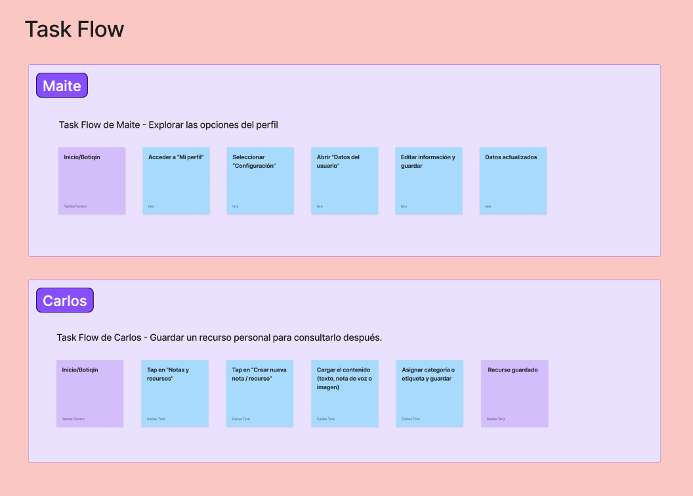
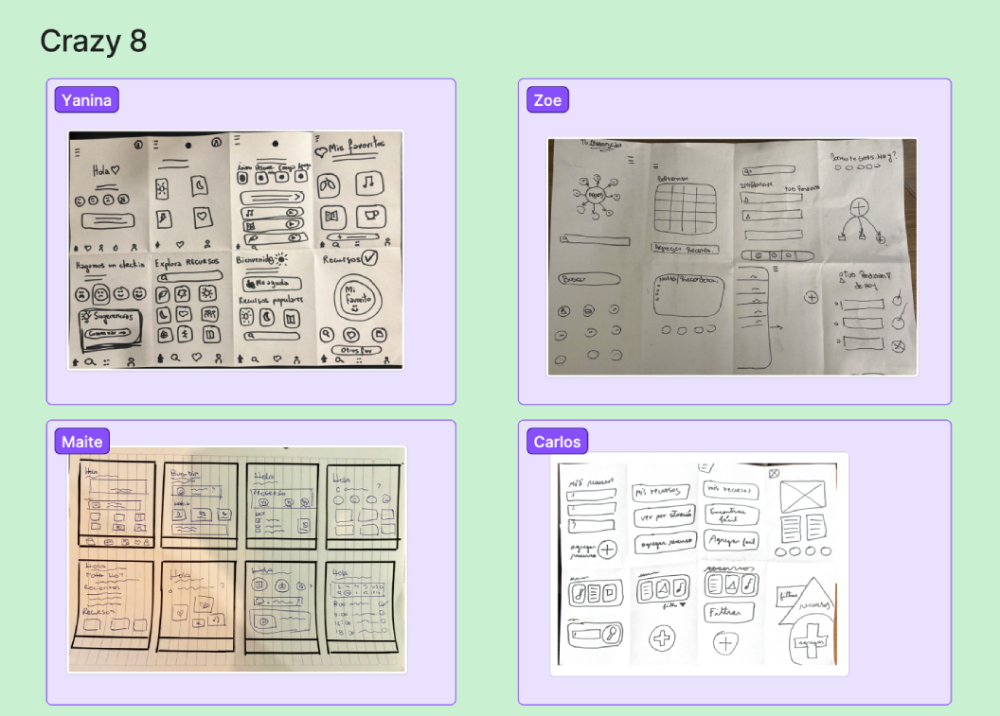
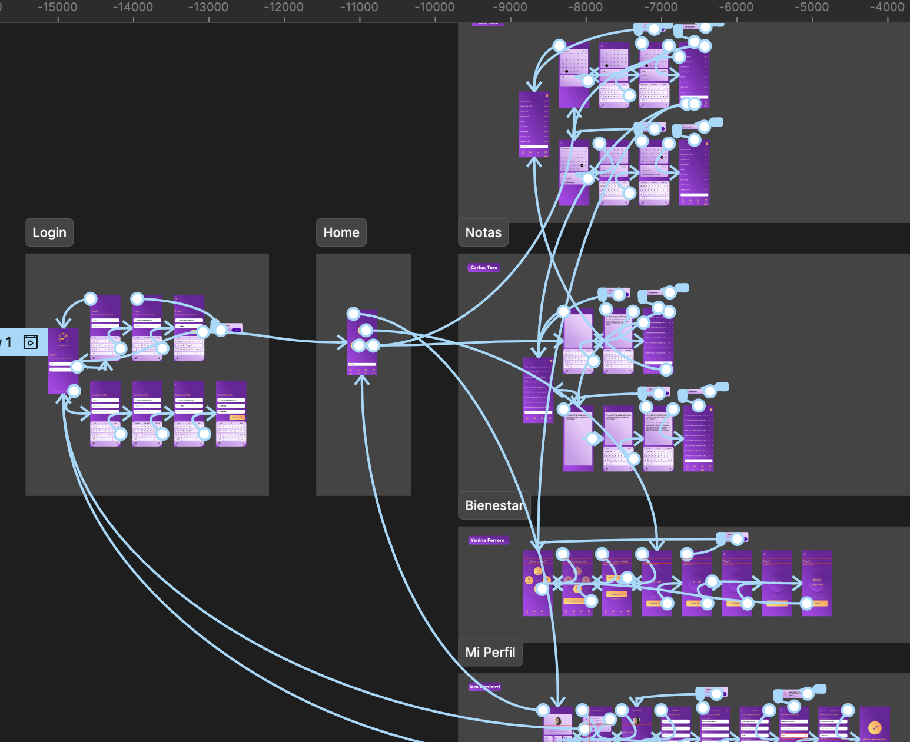
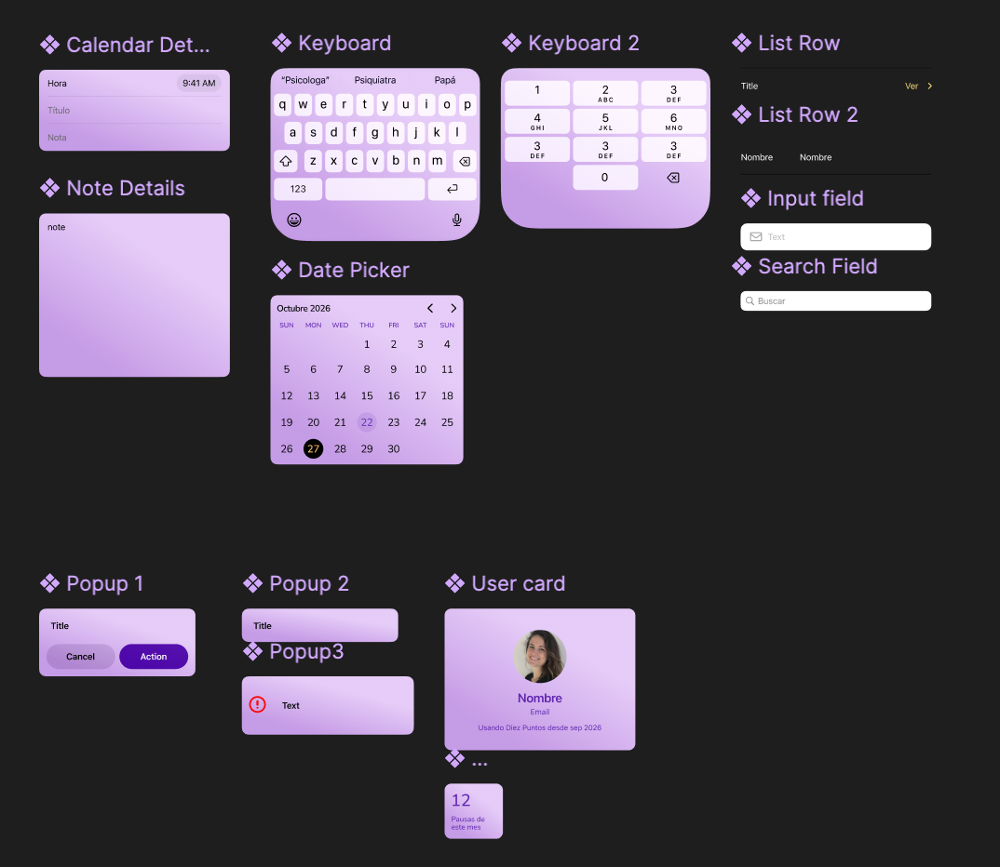
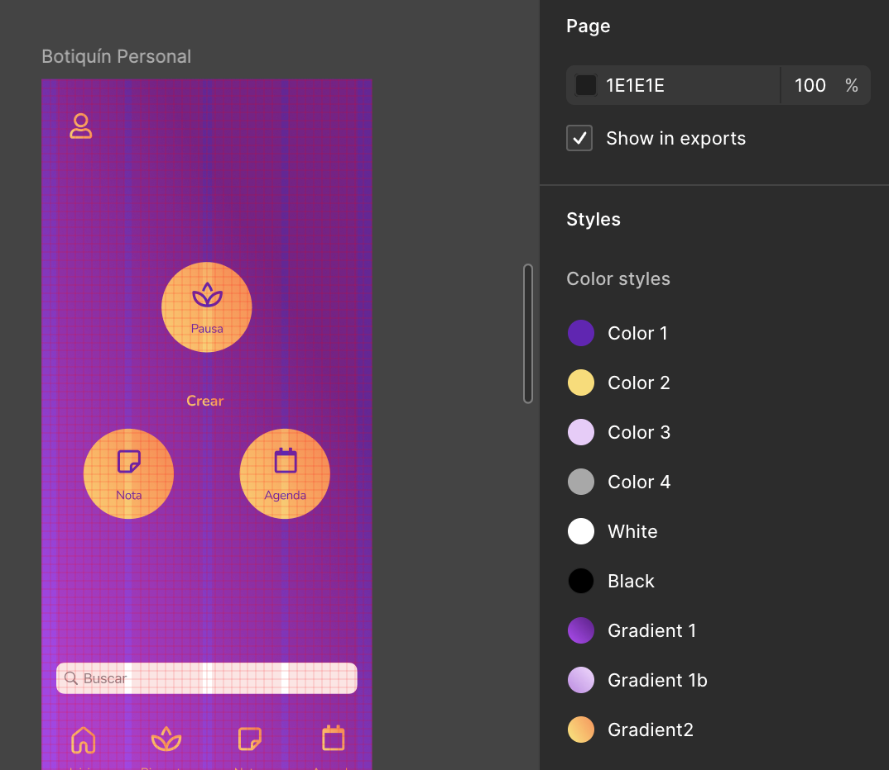

Diez Puntos · UX/UI Case Study · 2026
Keeping useful things close, when life feels overwhelming.

Overview
Notes in one app, reminders in another, a helpful audio somewhere in a chat. For people juggling work, study, and personal responsibilities, finding what they need can become another task.
Our team explored a personal toolkit that brings daily organization and familiar wellbeing resources into one place. I contributed to user research, conducted interviews, built the complete interactive prototype in Figma, and worked on the Notes and resources flow.
Framing the challenge
We started with a question: what happens when someone already has useful ways to organize their day or take a pause, but those resources are scattered across apps, messages, and paper?
Our initial hypothesis was that a central place to save and organize personal resources could make them easier to recover during periods of stress or overload.
How might we help people organize their responsibilities and recover familiar resources with less effort?
The design challenge was to support two moments: preparing and saving things during an ordinary day, and retrieving them when attention and energy are limited. Both needed to feel straightforward.
Understanding the context
Our discovery work combined desk research, a benchmark of Rootd, How We Feel, Calm, Lojong, and Moodflow, and qualitative interviews about everyday routines, stress, and existing coping strategies.
In the benchmark, we examined onboarding, navigation, content discovery, and access to saved resources. Lengthy setup and large content libraries raised a useful design question: how much effort should someone need to invest before reaching something helpful?
What the interviews revealed
- Saving something does not guarantee finding it.
Some participants kept helpful content across notes, messaging apps, music platforms, and paper. Recovering it could mean remembering where it had been stored.
- The same interface has to work with less attention.
One account highlighted that searching or reading instructions became difficult during overload. This pointed toward familiar labels and direct access to useful actions.
- Organization matters alongside wellbeing.
Calendars and reminders helped participants keep track of responsibilities. The opportunity included reducing the effort of managing daily tasks.
- The initial hypothesis did not fit everyone.
Some interviewees could recall their strategies without difficulty. This helped us broaden the focus to organization and access, rather than assume that everyone needed help remembering.
These findings come from a small qualitative study. They informed the concept and its priorities; they do not establish a measurable reduction in stress.

From assumptions to user needs
The team developed three personas to represent distinct needs: Lucas, balancing work and study; Camila, keeping track of notes and responsibilities; and Sofía, needing quick access during periods of overload. These profiles helped us discuss priorities without treating every user as the same.
Explore the discovery boardDefining the product
Centralizing everything could easily create another crowded tool. We needed a structure that made each kind of information easy to recognize.
A card sorting exercise with seven participants informed four content groups: Agenda for calendars and reminders, Notas y recursos for saved content, Bienestar for pauses and wellbeing tools, and Perfil for account settings.
The screen prototype places Inicio, Bienestar, Notas, and Agenda in the bottom navigation, with profile access handled separately. This keeps the everyday destinations close while separating account management from daily tasks.

A focused first version
The MVP brought together three core jobs: keep track of a responsibility, save a personal resource, and take a short pause. The scope linked practical organization with access to familiar support.
The wider concept also explored a support network and a disconnection mode. Those ideas would need more definition around permissions, expectations, and technical behavior before implementation.
The product’s value depends on how easily people can return to what matters to them.
Bringing the complete prototype together
I built the complete interactive prototype in Figma, connecting the team’s screens and flows across account access, the personal toolkit, Agenda, Notes, Wellbeing, and Profile.
A closer look at Notes and resources
I also worked on the Notes and resources task flow. The goal was to help someone capture something useful and return to it without having to remember which external app they had used.
I mapped the route from the personal toolkit to creating a resource, adding content, organizing it, and saving it. The concept considered text, voice notes, and images; the detailed screen sequence develops the text-note journey.
- Open Notes and resources from the personal toolkit.
- Choose to create a new note or resource.
- Add the content to keep.
- Organize the resource and save it.
- Return to the saved list and open it again.


Connecting the complete prototype
I brought the team’s screens together in Figma to build the complete interactive prototype, connecting login and account creation with Home, Notes, Wellbeing, and Profile.
The overview below shows navigation between these areas and the interactions within each flow, making the connections across the app visible in one place.

Designing the paths beyond a successful save
The user-flow board identifies missing content and upload failures. The following behaviors would need to be specified and tested before development:
- Empty list: explain what can be saved and offer a clear first action.
- Missing content: describe what is needed to save a resource.
- Save or upload failure: preserve the draft and offer a retry.
- No search results: keep the query visible and let the user change or clear it.
- Unsaved edits: make the consequences of leaving the editor clear.
Building consistency
The team moved from paper sketches to Figma wireframes. I brought the screens and interactions together into the complete prototype. The visual direction uses purple backgrounds, warm yellow accents, and a consistent set of navigation and content patterns.
Across the prototype, consistent navigation, buttons, form fields, and list patterns help connect the different screens into a coherent experience. Figma’s component instances and shared style variables provide a foundation for keeping those patterns aligned as the design changes.


Accessibility as part of the interaction
Limited attention was a recurring consideration in the research. Predictable navigation, short instructions, and recognizable actions therefore matter as much as the visual treatment. The profile concept also includes preferences for text size, contrast, and motion.
A next accessibility review should check text contrast across the gradients, enlarged text, touch targets, focus order, screen-reader labels, and reduced-motion behavior. The prototype establishes design intentions; a formal accessibility audit remains to be completed.
What development would need next
The component structure provides a starting point for implementation. Before handoff, I would document interaction states, validation and recovery messages, content overflow, responsive behavior, and rules for reusing each component. Saving, permissions, and resource storage also need to be agreed with engineering.
The current deliverable is a Figma prototype. Implementation specifications and production behavior are next steps.
Evidence and next steps
What the project produced
A research-informed concept, personas, an information architecture informed by card sorting, task and user flows, paper explorations, and a Figma screen prototype.
Card sorting gave us evidence about how participants grouped the content. Testing the complete interaction is the next step: the materials do not yet document usability-test outcomes, a completed heuristic evaluation, or results from a launched product.
How I would evaluate the next version
- Can someone save a resource independently?
Ask participants to create and save a note. Observe task completion, hesitation, errors, and requests for help.
- Can they recover it later?
Ask them to find a previously saved resource. Record the route taken, time on task, and whether the labels and search support recognition.
- Can they recover from an interruption?
Introduce an incomplete note or a failed save. Check whether participants understand the message and can continue without losing their work.
These observations would establish a baseline for iteration. Success would mean completing the tasks with fewer points of confusion and less assistance. Any claim about longer-term wellbeing would require a separate evaluation.
Reflection
This project reinforced the importance of letting research challenge an initial idea. People had different relationships with memory, organization, and support. A useful product needed to accommodate those differences.
Building the complete prototype alongside my work on the Notes flow made consistency tangible. A save action, a list row, and the route back to the toolkit all depend on decisions made across the product.
My next priority would be to test retrieval early, clarify categorization, and complete error recovery. The value of a saved resource becomes real when someone can find and use it again.